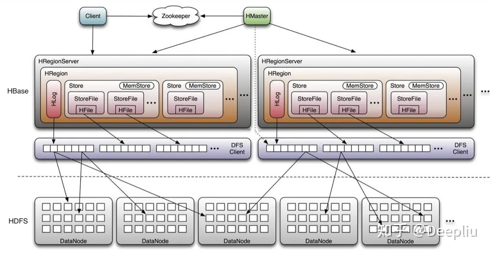
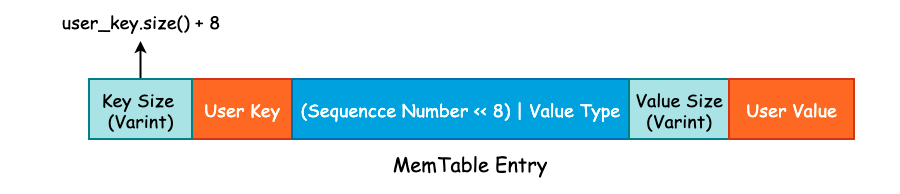
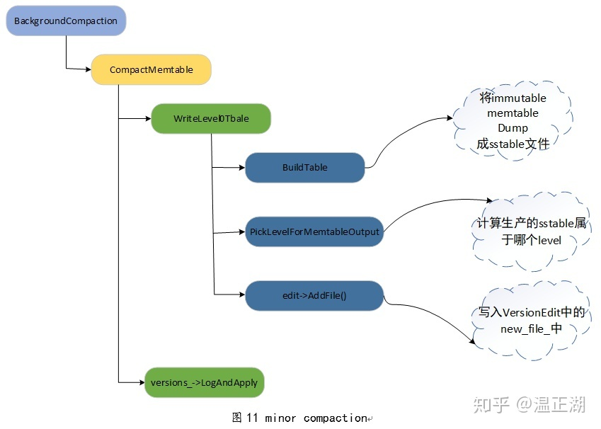
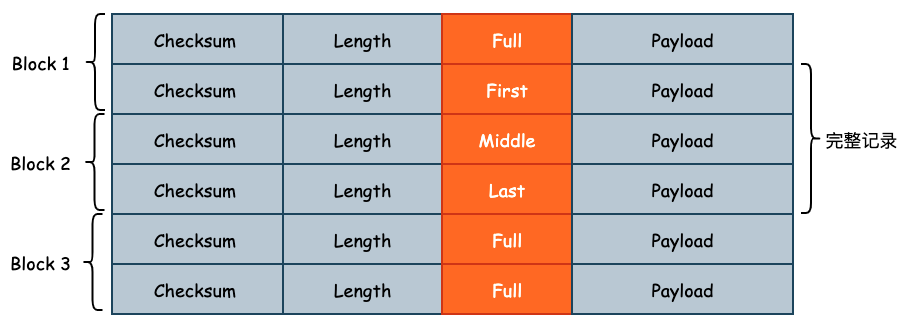
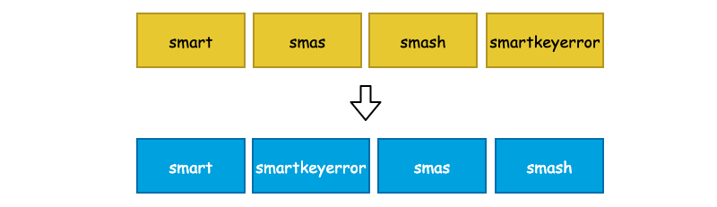
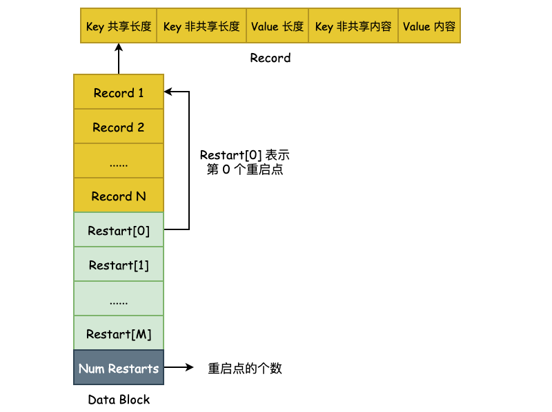
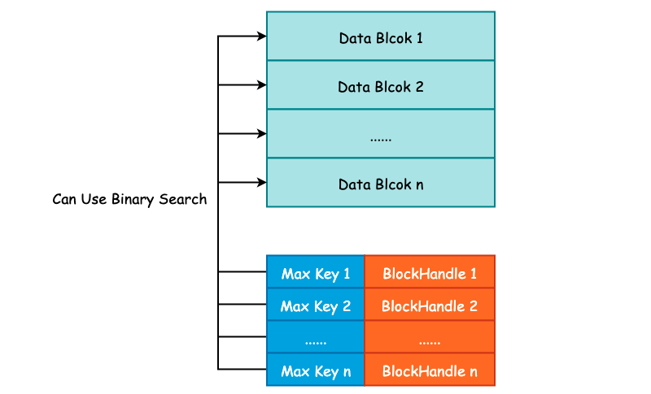
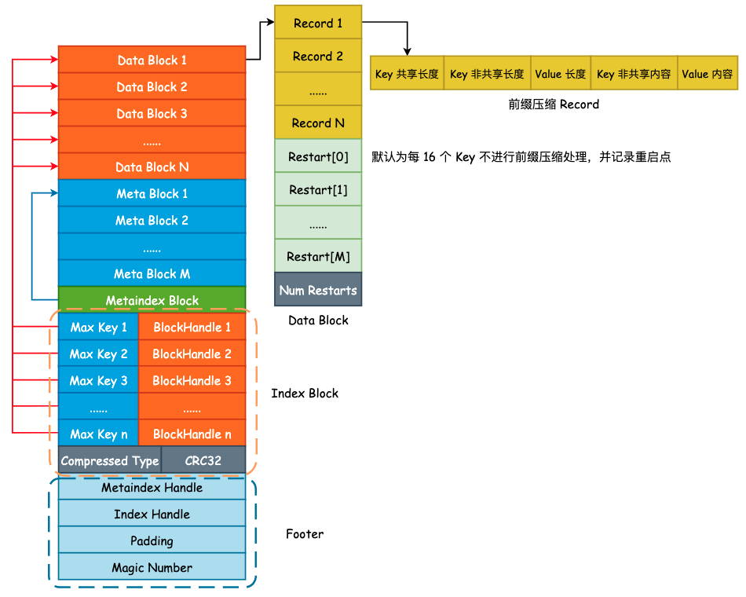
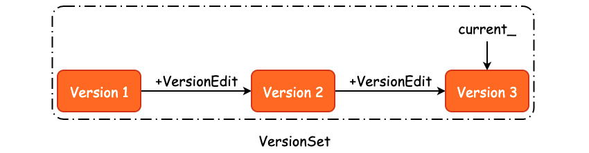
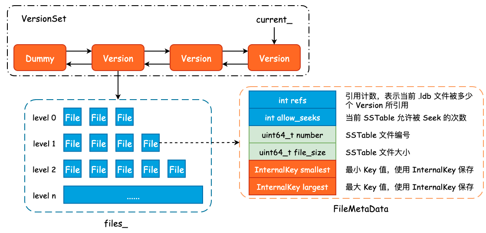

leveldb-1.23-annotated
LevelDB 1.23 源码分析
Fork me on GitHub!
除开这些 standalone 的分析文章，仓库中的源码也以注释方式进行分析。
leveldb 概述
leveldb 的特性存在于以下几个方面：
- 键值对存储
- LSMTree 架构
- 多版本控制（MVCC）
leveldb 源码分布（Power by tokei）
===============================================================================
Language Files Lines Code Comments Blanks
===============================================================================
Autoconf 12 456 314 76 66
C 1 384 329 11 44
C Header 126 36462 19257 11961 5244
CMake 15 2412 1679 423 310
C++ 239 90266 65030 13026 12210
JSON 6 511 511 0 0
Python 54 14410 10575 1938 1897
Sass 2 198 159 3 36
Shell 2 197 116 67 14
Plain Text 5 1502 0 1316 186
YAML 5 91 78 1 12
===============================================================================
Total 523 161420 98463 39523 23434
===============================================================================
LSMTree 概述
需要注意到的是，LSMTree 只是描述数据结构的理论，leveldb 在具体实现的时候是存在权衡与取舍的。
LSMTree 整体架构如下：

顺序写入
LSM 组织的页是完全顺序写入的，每一项通过标识位表明操作类型是增还是删。
这不同于 B+树组织的页，后者会直接在数据项处修改相应的值。
完全顺序写入依赖于以下性质：
- SSTable 全部节点都是优先满的；
快速过滤
查找时的快速过滤能力借助于 SSTable 保存的 MetaBlock（由 Bloom Filter 实现）。
leveldb 生态
leveldb 作为专注的键值对持久化存储引擎，衍生出不少存储组件。
RocksDB
RocksDB 是对 leveldb 的封装和优化，以实现更易用的 KV 存储引擎。
MyRocks 是兼容 MySQL 的 RocksDB 实现。
MyRocks 与 InnoDB 的性能分析如下图：

HBase
HBase 也是基于 leveldb 内核，更加专注于分布式场景。
HBase 的分布式架构如下： 
related readings
LevelDB 设计与实现 - 温正湖 LevelDB 源码剖析 - zw Huang RocksDB Blogs RocksDB Document RocksDB 中文文档
leveldb 中常用的数据结构
1. Slice
Slice 是 leveldb 中使用最为频繁的数据结构，不管是 Write Batch，还是构建 SSTable，都需要 Slice 的重度参与。这里的 Slice 是一种封装的字节数组类型，类比于 std::string。
C++ 中的 std::string 只提供了简单的 push_back、pop_back 等方法，诸如 starts_with、remove_prefix 等方法都没有提供。因此，leveldb 使用 char * 自行封装了 string 对象，以满足功能需要。
Slice 的特性：
- 无生命周期：可以理解为寄存器变量，类似于 int，因为 data_ptr 所指向的字节数组的申请/释放是在别处完成的；
- 轻量：Slice 的拷贝开销仅存在于 const char * 和 size_t，相当于两个 uint64_t 的拷贝开销。是 string_view 的简单实现；
Slice 中的成员变量只有两个，一个是 char 类型的字符指针，另一个则是字符串的长度。此外，Slice 本身并不负责内存分配，只是简单地接收外部传入的指针对象。
class LEVELDB_EXPORT Slice {
public:
/* 从 std::string 中构建 Slice 对象，s.data() 返回 string 首地址指针 */
Slice(const std::string& s) : data_(s.data()), size_(s.size()) {}
/* 主要用于从字面量中构建 Slice，例如 Slice("leveldb") */
Slice(const char* s) : data_(s), size_(strlen(s)) {}
/* 移除 Slice 的前 n 个字符，只是进行简单的指针运算 */
void remove_prefix(size_t n) {
data_ += n;
size_ -= n;
}
/* 将 Slice 转化为 string 对象 */
std::string ToString() const { return std::string(data_, size_); }
/* 判断 Slice 是否以 Slice.data_ 为前缀 */
bool starts_with(const Slice& x) const {
return ((size_ >= x.size_) && (memcmp(data_, x.data_, x.size_) == 0));
}
private:
const char* data_; /* 字符指针，保存字符串起始地址 */
size_t size_; /* 字符串长度，不包括 '\0' 结尾标志 */
};
Slice 的实现并不复杂，甚至没有提供内存分配机制，只是简单地进行了一个封装，但却是 leveldb 中最为重要的数据结构。
2. Status
在 Web 开发中，由于 HTTP 状态码数量有限，不能够完全地表达出调用 API 的结果，因此通常都会采用自定义 error_code 的方式实现，比如微信公众号的全局错误返回码: 全局返回码说明，一个统一的返回状态能够有效地降低后期运维成本。leveldb 并没有使用 Linux Kernel 的错误返回，而是使用 Status 类来制定统一的返回状态。
class LEVELDB_EXPORT Status {
private:
enum Code {
kOk = 0,
kNotFound = 1,
kCorruption = 2,
kNotSupported = 3,
kInvalidArgument = 4,
kIOError = 5
};
/* state_ 是分配在堆上的，使用 new char[] 的方式进行分配 */
const char* state_;
};
leveldb 一共定义了 6 种状态，内部使用枚举类实现，每一个返回状态都会有对应的 2 个方法，一个是构造返回状态，另一个则是判断状态。以 kNotFound 为例:
/* 通过 msg 构造 NotFound Status，其中 msg2 主要用于存储系统调用时的错误码，也就是 errno */
static Status NotFound(const Slice& msg, const Slice& msg2 = Slice()) {
return Status(kNotFound, msg, msg2);
}
/* 判断当前 status 对象的状态是否为 NotFound */
bool IsNotFound() const { return code() == kNotFound; }
可以看到，方法名和状态名称之间是强耦合的，也就是说我们无法在不改变 Status 定义的前提下对其进行拓展，算是一个小小的缺点。
简单地看一下 Status 的构造函数实现，通过状态码和错误信息构造 Status 属于私有方法，只能由 NotFound()、Corruption()、InvalidArgument() 等方法调用，这又限制了我们自行拓展 Status 的能力。
/* msg2 通常用于保存 errno */
Status::Status(Code code, const Slice& msg, const Slice& msg2) {
/* 获取 msg 以及 msg2 的长度 */
const uint32_t len1 = static_cast<uint32_t>(msg.size());
const uint32_t len2 = static_cast<uint32_t>(msg2.size());
/* 如果 len2 不为 0 的话，需要对 msg 和 msg2 做分割，leveldb
* 使用 ": " 这两个字符进行分隔，属于硬编码 */
const uint32_t size = len1 + (len2 ? (2 + len2) : 0);
/* 5 就是 4 字节的 message 长度 + 1 字节的状态码 */
char* result = new char[size + 5];
/* 将 message 长度写入 */
std::memcpy(result, &size, sizeof(size));
/* 将状态码写入 */
result[4] = static_cast<char>(code);
std::memcpy(result + 5, msg.data(), len1);
/* 使用 ": " 作为 msg 和 msg2 的分割线 */
if (len2) {
result[5 + len1] = ':';
result[6 + len1] = ' ';
std::memcpy(result + 7 + len1, msg2.data(), len2);
}
state_ = result;
}
Status 的结构如下图所示，在内部只需要使用 state_[4] 即可获得 Status 的具体状态:
3. Skip List
Memory Table 由 Skip List 实现，由于 leveldb 在对 Key 进行修改和删除操作时，采用的是追加方式，因此 Skip List 只需要实现插入和查找两个方法即可:
template <typename Key, class Comparator>
class SkipList {
private:
struct Node;
public:
explicit SkipList(Comparator cmp, Arena* arena);
void Insert(const Key& key);
bool Contains(const Key& key) const;
private:
enum { kMaxHeight = 12 }; /* 最大层高 */
Arena* const arena_; /* 内存分配器 */
Node* const head_; /* 虚拟头节点 */
};
Skip List 的核心结构为 Node，其内部采用原子变量来进行指针的相关操作，因此，leveldb 中的 Skip List 是线程安全的，并且使用的是无锁实现:
template <typename Key, class Comparator>
struct SkipList<Key, Comparator>::Node {
explicit Node(const Key& k) : key(k) {}
Key const key;
/* 原子性地获取当前 Node 的第 n 层的下一个节点指针 */
Node* Next(int n) {
/* std::memory_order_acquire 表示在 load() 之后的所有读写操作，
* 不允许被重排到这个 load() 的前面 */
return next_[n].load(std::memory_order_acquire);
}
/* 原子性地设置当前 Node 的第 n 层的下一个节点指针 */
void SetNext(int n, Node* x) {
/* std::memory_order_release 表示在 store() 之前的所有读写操作，
* 不允许被重排到这个 store() 的后面 */
next_[n].store(x, std::memory_order_release);
}
private:
std::atomic<Node*> next_[1];
};
跳表实现细节
leveldb 的 SkipList 的大致结构如下。Redis 的跳跃表的细微差别在于，leveldb 并没有使用 prev指针。因为 leveldb 只会进行单方向的查找，而没有 Redis 那样双向查找的需求。
另外，参数 kBranching 选取为1/4，这意味着上层的节点数量为下层节点数量的 1/4。
为什么选用跳表实现有序集合
我们知道，实现无序集合的方式主要有：哈希表，实现有序集合的方式主要有：B+树、红黑树、跳表。
Q1: 为什么不用红黑树实现？
首先一点，红黑树的代码比较复杂。
其次，针对区间查找操作，红黑树的效率不如跳表，后者可以以 O(logn) 的时间复杂度定位区间起点，再走链表定位区间终点。
Q2: 为什么不用 B+树实现？
跳表和 B+树的本质都是在单向链表之上建立索引，不过跳表建索引的方式较为随意，不如 B+树那样能显著压缩索引层的高度（进而缩短索引路径长度）。
B+树的索引侧重于读时的优化，而跳表建立的索引更侧重于写多读少的场景，这与 leveldb 的需求是一致的，即大规模写入。故选用跳表。
4. LRUCache
为了优化查询效率，leveldb 自行实现了一个标准的 LRU Cache，即哈希表+双向链表，并且 leveldb 选择了自行实现哈希表，并没有使用 std::unordered_map，同时使用了 port::Mutex 来保证 LRU Cache 的并发安全性。port::Mutex 其实就是对 std::mutex 的简单封装。
leveldb 中的 varint 与 Key 组成
在 leveldb 中，int32 或者是 int64 采用的是变长存储，这一空间优化在 gRPC 中也有使用。其原理就是将原本需要使用 4 字节存储的 int32 或者是 8 字节存储的 int64 根据整数的实际大小使用不同的字节数进行存储。
比如说现在我们有一个 int32，其值为 1024，那么完全可以使用一个 int16 进行存储。但是因为我们需要考虑到存储值的上限，所以必须使用 int32 来实现。变长整数就是为了解决无论多大的数字都需要使用 4 字节 或者 8 字节 进行存储的问题的。
varint 是一种使用一个或多个字节序列化整数的方法，会把整数编码为变长字节。对于 32 位整型经过 varint 编码后需要 1~5 个字节，小的数字使用 1 字节，大的数字使用 5 字节。而 64 位整数根据 varint 编码后需要 1~10 个字节。在实际业务场景中，小整数的使用频率要远超于大整数的使用频率，因此使用 varint 编码能够有效的节省内存和硬盘的存储空间。
1. varint 编码
首先，leveldb 对整数提供了两种类型的编码，一种是 fixedint，另一种则是 varint。其中 fixedint 就是将 uint32_t 或者是 uint64_t 转换成 char *，而 varint 则是对整型进行变长编码，并写入到 char *dst 中。关于编码的实现全部都在 util/coding.cc 文件中。
1.1 fixedint 编码
inline void EncodeFixed32(char* dst, uint32_t value) {
uint8_t* const buffer = reinterpret_cast<uint8_t*>(dst);
buffer[0] = static_cast<uint8_t>(value);
buffer[1] = static_cast<uint8_t>(value >> 8);
buffer[2] = static_cast<uint8_t>(value >> 16);
buffer[3] = static_cast<uint8_t>(value >> 24);
}
EncodeFixed32() 的实现非常简单，就是将 value 的每一个字节写入到 dst 中。并且可以看到，value 的低字节被写入到了 buffer 的低地址中。因此，数据存放的方式是按照先低位后高位的顺序存放的，也就是说，leveldb 采用的是小端存储（Little-Endian）。
1.2 varint 编码
对于 varint 编码而言，每一个字节的最高位为保留位，1 表示后面仍有数据，0 则表示当前字节是 varint 的结尾。也就是说，varint 的每一个字节只能使用 7 位，所以当我们有一个 64 位长度的整型需要进行 varint 编码时，必须使用 10 个字节才能表示。这比原来的 8 字节还要多出 2 个字节，所以，varint 并不适合用于大整数占比非常多的情况。
char* EncodeVarint64(char* dst, uint64_t v) {
/* 每一个字节有效位为 7，最大只能表示 2^7 - 1 = 127 */
static const int B = 128;
uint8_t* ptr = reinterpret_cast<uint8_t*>(dst);
/* 当 v 大于 127 时，说明还需要一个字节来保存 */
while (v >= B) {
*(ptr++) = v | B;
v >>= 7;
}
*(ptr++) = static_cast<uint8_t>(v);
return reinterpret_cast<char*>(ptr);
}
对于 EncodeVarint64() 我们唯一需要注意的是，传入的 dst 指针地址与函数返回 result 指针的地址必然不是同一个地址，result 指针相对于 dst 指针将会有 1~10 字节的偏移量，具体取决于 varint 到底使用了多少个字节。
int main() {
char *dst = new char[10];
printf("before encode: %p \n", dst);
uint32_t v = 128;
dst = EncodeVarint64(dst, v);
printf("after encode: %p \n", dst);
}
运行上述程序得到的结果为:
before encode: 0x7fd6c1405880
after encode: 0x7fd6c1405882
说明 128 在使用 varint 时必须使用 2 字节存储，同时也说明了原来 dst 指针发生了改变。
2. leveldb 中的 Key Format
由于 leveldb 是一个 K-V 存储引擎，并且使用 LSM 这一追加写的数据结构作为底层存储，那么对于 Key 的设计就变得至关重要了。
一方面 Key 需要保存用户所存入的 User Key 信息，另一方面还必须存在一个序号来表示同一个 User Key 的多个版本更新。
InnoDB 存储引擎为了实现 MVCC 则是将一个全局递增的 Transaciton ID 写入到 B+Tree 聚簇索引的行记录中。而 leveldb 则是使用一个全局递增的序列号（Sequence Number）写入到 Key 中，以实现 Snapshot 功能，本质上就是 MVCC。
从另一个角度来说，如果某个 DB 支持 MVCC 或者说快照读功能的话，那么在其内部一定存在一个全局递增的序号，并且该序号是必须和用户数据一起被持久化至硬盘中的。
最后，当我们使用 Delete() 删除一个 Key 时，实际上并不会找到这条数据并物理删除，而是追加写一条带有删除标志位的 Key。所以我们还需要一个标志位，来表示当前 Key 是否被删除，leveldb 中使用 ValueType 这个枚举类实现。
实际上，User Key、Sequence Number 以及 Value Type 正是组成一个 Key 的必要组件，并且在这些组件之上还会有一些额外的扩展，这些扩展也只是简单地使用 Varint 来记录 User Key 的长度而已。
2.1 InternalKey 与 ParsedInternalKey
InternalKey 本质上就是一个字符串，由 User Key、Sequence Number 以及 Value Type 组成，是一个组合结构。而 ParsedInternalKey 其实就是对 InternalKey 的解析，将 User Key、Sequence Number 以及 Value Type 从 InternalKey 中提取出来，并保存起来。
首先来看 ParsedInternalKey 中字段的定义:
struct ParsedInternalKey {
Slice user_key;
SequenceNumber sequence;
ValueType type;
};
可以看到，ParsedInternalKey 中保存的正是我们在上面讨论的三个组件。将这三个组件按照一定的方式拼接成一个字符串，也就得到了 InternalKey，过程如下图所示:

可以看到，leveldb 将 User Key、Sequence Number 以及 Value Type 拼接成 InternalKey 时并不是简单的 Append，而是将 Value Type 揉到了 Sequence Number 的低 8 位中，以节省存储空间。因此，尽管 Sequence Number 被声明为 uint64_t 类型，能够取得的最大值为 (1 << 56) - 1。虽然只有 7 字节的有效位，但是也是够用的。
ParsedInternalKey 和 InternalKey 之间的转换主要使用两个函数完成，实现如下:
/* 将 ParsedInternalKey 中的三个组件打包成 InternalKey，并存放到 result 中 */
void AppendInternalKey(std::string* result, const ParsedInternalKey& key) {
/* 将 User Key 添加至 result */
result->append(key.user_key.data(), key.user_key.size());
/* PackSequenceAndType() 其实就是执行 (key.sequence << 8) | key.type */
PutFixed64(result, PackSequenceAndType(key.sequence, key.type));
}
/* 将 InternalKey 拆解成三个组件并扔到 result 的相应字段中 */
inline bool ParseInternalKey(const Slice& internal_key, ParsedInternalKey* result) {
const size_t n = internal_key.size();
if (n < 8) return false;
uint64_t num = DecodeFixed64(internal_key.data() + n - 8);
uint8_t c = num & 0xff;
result->sequence = num >> 8;
result->type = static_cast<ValueType>(c);
result->user_key = Slice(internal_key.data(), n - 8);
return (c <= static_cast<uint8_t>(kTypeValue));
}
2.2 LookupKey 与 MemTableKey
当我们查询一个 User Key 时，其查询顺序为 MemTable、Immutable Table 以及位于硬盘中的 SSTable。MemTable 所提供的 Get() 方法需要使用到 LookupKey，LookupKey 可以认为是一个“究极体”，从该对象中我们可以得到所有我们需要的信息，包括 User Key、User Key 的长度、Sequence Number 以及 Value Type。
LookupKey 其实就是在 InternalKey 的基础上，额外的添加了 User Key 的长度，这个长度是由 Varint 进行编码的。因此，程序为了能够正确的找到 User Key 和 Sequence Number 等信息，额外的使用了 3 个指针，如下图所示:

Size 的大小为 User Key 的字节数再加上 8，然后通过 EncodeVarint32() 方法进行编码，写入到字符串的头部。同时，对于 LookupKey 来说，其 Value Type 为 kValueTypeForSeek，其实也就是 kTypeValue。
在有了这 3 根指针以后，我们就可以非常方便地获取到各种各样的信息了:
class LookupKey {
public:
/* 可以看到，MemTable Key 和 LookupKey 其实是等价的*/
Slice memtable_key() const { return Slice(start_, end_ - start_); }
/* 返回 InternalKey */
Slice internal_key() const { return Slice(kstart_, end_ - kstart_); }
/* User Key 的话需要刨去最后的 (Sequence Number << 8) | Value Type */
Slice user_key() const { return Slice(kstart_, end_ - kstart_ - 8); }
};
2.3 MemTable Entry
leveldb 使用 Skip List 来实现位于内存中的 MemTable，并提供了 Add() 方法将 Key-Value 写入至 Skip List 中。在 Skip List 的实现中，我们并没有发现 Value 字段，这是因为 leveldb 将 User Key 和 User Value 打包成一个更大的 Key，直接塞到了 Skip List 中，具体实现可见 MemTable::Add() 方法。

leveldb 的写入流程
在前面一节中我们讨论了 leveldb 中的 varint 以及 Key 格式，用户所传入的 User Key 将会被封装成 MemTable Key，再加上 User Value 封装成 MemTable Entry 写入到 MemTable 中：

在这一节中，就来分析一下 K-V 是如何被写入到硬盘中的。
1. WriteBatch
include/leveldb/db.h 中的 DB 类提供了 leveldb 对外的抽象 API，该类中所有的函数均为纯虚函数，也就是说，DB 类其实就是一个 Interface。不过，由于 C++ 语法的特殊性，DB 类也可以对纯虚函数进行实现，并且 leveldb 也给出了默认实现。
有两个类实现了 DB 接口，一个是位于 db/db_test.cc 文件中的 ModelDB，另一个则是位于 db/db_impl.cc 中的 DBImpl。很明显，ModelDB 主要用于测试，而 DBImpl 才是 leveldb 实现的核心类。在本节中，我们只需要关注 DBImpl::Put() 和 DBImpl::Write() 这两个方法即可。
首先来看 Put() 方法:
struct WriteOptions {
WriteOptions() = default;
bool sync = false; /* 写入 WAL 时是否同步调用 fsync() */
};
/* DBImpl 实现的 Put() 方法，本质上还是调用了 leveldb 的默认实现 */
Status DBImpl::Put(const WriteOptions& o, const Slice& key, const Slice& val) {
return DB::Put(o, key, val);
}
/* 真正的 Put() 方法实现 */
Status DB::Put(const WriteOptions& opt, const Slice& key, const Slice& value) {
WriteBatch batch;
batch.Put(key, value);
return Write(opt, &batch);
}
WriteOptions 中只有 sync 一个字段，用于控制当 leveldb 将数据写入到预写日志时，是否同步地调用 fsync() 将内核缓冲区中的数据 flush 到硬盘，其值默认为 false。在生产实践中，这个值一般为 true，尽管为 false 时能够提高 leveldb 的写入速度，但是会有数据丢失的风险。
在 DB::Put() 方法中，生成了一个 WriteBatch 对象。leveldb 为了提高写入效率，会将多个线程提交的 K-V 写操作打包成一个 WriteBatch 对象，然后进行一次性写入，是一种常见的批量写入优化手段。WriteBatch 的底层数据结构实际上就是一个 std::string，用于承载多个 K-V。
class WriteBatch {
public:
WriteBatch();
void Put(const Slice& key, const Slice& value); /* 添加 K-V */
void Delete(const Slice& key); /* 删除 K-V */
void Append(const WriteBatch& source); /* Copy WriteBatch */
/* Iterate 方法将会遍历 rep_ 中的 K-V，并根据 K-V 中的 Value Type 来决定
* 调用 handler->Put() 或 handler->Delete()，Handler 是一个抽象基类*/
Status Iterate(Handler* handler) const;
private:
friend class WriteBatchInternal;
std::string rep_;
};
因为 DB::Put() 调用了 WriteBatch::Put() 方法，所以现在来看下 WriteBatch::Put() 方法的具体实现:
/* 将 value.size() 进行 varint 编码，写入 dst 中，并且将 value 也追加到 dst 中 */
void PutLengthPrefixedSlice(std::string* dst, const Slice& value) {
PutVarint32(dst, value.size());
dst->append(value.data(), value.size());
}
/* 将 User Key、User Value 以及 Value Type 追加到 rep_ 中 */
void WriteBatch::Put(const Slice& key, const Slice& value) {
WriteBatchInternal::SetCount(this, WriteBatchInternal::Count(this) + 1);
rep_.push_back(static_cast<char>(kTypeValue));
PutLengthPrefixedSlice(&rep_, key);
PutLengthPrefixedSlice(&rep_, value);
}
可以看到，WriteBatch::Put 只是简单地将 User Key、User Value 以及 Value Type 进行打包，得到一个打包后的“数组”，其内存布局如下图所示:

需要注意的是在 rep_ 的起始位置存在 12 字节的预留位，用于填充这些 K-V 的起始 Sequence Number 以及 Count 计数。将多个 K-V 打包完成以后，将会调用 DBImpl::Write() 方法，正式进入 leveldb 的写入流程。
2. 写入逻辑
在将数据写入预写日志文件之前，需要循环确认 leveldb 的状态，主要包括 MemTable 是否达到最大容量、Level-0 中的文件数是否已经达到某个阈值等。如果 MemTable 已经达到了最大容量，并且此时 Immutable MemTable 仍未 flush 到硬盘时，leveldb 将会等待后台线程完成其相关工作。这些判断均在 MakeRoomForWrite() 方法中进行:
- 如果当前 Level-0 层的 SSTable 数量已经达到了阈值
kL0_SlowdownWritesTrigger（默认为 8），则会调用std::this_thread::sleep_for()方法延迟 1 毫秒写入，该延迟写入只会进行 1 次。 - 如果当前 MemTable 容量没有达到最大大小（
write_buffer_size，默认为 4MB）则允许写入，返回 OK 状态的Status。 - 如果 MemTable 已达到最大容量，并且 Immutable MemTable 仍存在的话，就需要等待 Compaction 完成。
- 如果 Level-0 层的 SSTable 数量已经达到了阈值
kL0_StopWritesTrigger（默认为 12），同样需要等待 Compaction 完成。 - 最后，当 MemTable 以达到最大容量，并且 Immutable MemTable 不存在时，就需要将 Memtable 主动地变更为 Immutable MemTable，并初始化一个新的 MemTable 和日志文件，并主动地触发 Minor Compaction，可能会创建一个新的线程执行，同时允许写入。
当 MakeRoomForWrite() 方法调用返回时，不管之前发生了什么，现在的 MemTable 一定是有剩余容量并且 Level-0 的文件数量大概率小于 4，所以可以进行接下来的写入流程。
而后，我们需要获取最新的 Sequence Number，并将 last_sequence + 1 写入到 write_batch 的起始位置上，而后就可以写预写日志了。
在写完预写日志以后，会根据 options.sync 的值来决定是否调用 fsync() 进行刷盘，成功以后就会将 write_batch 中数据写入至 Skip List 所实现的 MemTable 中。
这个过程在 WriteBatch::Iterate() 方法中进行，遍历 rep_ 中打包好的 K-V，逐一地调用 MemTable::Add() 方法:
void MemTable::Add(SequenceNumber s, ValueType type, const Slice& key,
const Slice& value);
可以看到，MemTable Entry 所需要的“四元素”均会由外部传入，在 MemTable::Add() 方法内部将会调用相关的编码函数将其打包成 MemTable Entry 的格式插入到 Skip List 中。MemTable Entry 格式具体可见本篇文章开头部分。
最后，leveldb 将会更新全局的 Sequence Number，其值就是原来的 Sequence Number 再加上此次 write_batch 写入的 K-V 数量。
整个写入流程可见下图：

各个 Compaction 函数之间的调用关系： 
leveldb 预写日志格式及其读写流程
对于存储引擎来说，为了能够加快写入速度，通常会将数据写入至位于内存的缓冲区中，然后由后台线程或者是其它方式再持久化至底层硬盘中。但是这样一来会有数据丢失的风险，因为内存中的数据是易失的。因此绝大多数存储引擎都是采用 WAL (Write Ahead Log) 的方式，首先将数据顺序地写入预写日志文件中，再去处理核心写入逻辑，以防止数据在节点宕机时的丢失。
InnoDB 存储的 redo log 就是一种典型的 WAL 实现，由于预写日志不可能任其无限增长，所以 InnoDB 使用了“环形数组”的方式进行覆盖写入，单个 redo log 的默认大小为 48MB。leveldb 并没有采用循环写入的方式实现，而是使用创建新的日志文件并删除旧有的日志文件实现。
leveldb 为了优化读取性能，将预写日志文件切割成了大小为 32KB 的连续 Block，并且每一个预写日志的大小为 4MB，和 MemTable 的默认大小保持一致。每一个 Block 中会包含多个连续的日志记录，每一个日志记录除了 User Key 和 User Value 以外，还会包括校验和（checksum）、长度以及记录类型等信息。预写日志格式如下图所示:

Log Type 是一个比较特殊的字段，是一个枚举值，定义如下:
enum RecordType {
kZeroType = 0, /* 预留给预分配文件 */
kFullType = 1, /* 当前 Record 包含完整的日志记录 */
kFirstType = 2, /* 当前 Record 包含日志记录的起始部分 */
kMiddleType = 3, /* 当前 Record 包含日志记录的中间部分 */
kLastType = 4 /* 当前 Record 包含日志记录的结束部分 */
};
设计 Log Type 的原因在于 User Key 和 User Value 的大小可能会超过 32KB，此时 Record 就需要跨 Block 存储。此时 leveldb 就会将该条日志记录切分成多条 Log Record，Log Type 就是用来记录当前 Record 属于切分后 Record 的哪一个部分的，如下图所示:

1. 预写日志写入流程
我们如何写入一个数据决定了如何读取一个数据，因此不管是在设计业务应用还是在设计系统应用时，可以先从写入方式入手。
与预写日志相关的类主要包括 3 个: WritableFile、Writer 以及 PosixWritableFile。其中 WritableFile 看名字就可以知道是一个 Interface，并且 PosixWritableFile 实现了该接口。而 Writer 则依赖于 WritableFile，它们之间的关系可见下图:

当我们调用 DBImpl::Write() 写入 Batch 数据时，在确认 DB 的写入状态以后将会首先调用 Writer::AddRecord() 方法写入预写日志，接下来就来看具体的写入过程。
首先，leveldb 取出 slice 里面的指针数据和长度，这个 slice 其实就是 WriteBatch.rep_，具体格式可见上一篇分析。而后，初始化 begin 标志位为 true，用于表示这是一条日志的起始位置。在写入过程中还会有一个 end 标志位，表示是否为日志的结束位置，那么根据 begin 和 end 这两个标志位我们就可以决定 RecordType 了。比如当 begin 和 end 都为 true 时，那么 RecordType 应为 Full。
const char* ptr = slice.data(); /* 获取 WriteBatch 底层数据 */
size_t left = slice.size(); /* 剩余写入数据长度 */
Status s;
bool begin = true; /* 标志位 */
紧接着，当剩余写入长度，也就是 left 大于 0 并且写入过程没有出错的话，就会循环写入数据。在循环写入时，由于一个 Block 的容量为 32KB，因此需要确定还有多少空间可以写入。如果说剩余的空间小于 kHeaderSize，也就是 Record Header（7 字节）的大小时，那么就需要开辟新的 Block 写入: Record Header 不能跨 Block 写入。
/* 计算当前 Block 剩余写入 */
const int leftover = kBlockSize - block_offset_;
assert(leftover >= 0);
/* 如果当前 Block 不足以写入 Record Header 的话，需要使用新的 Block */
if (leftover < kHeaderSize) {
// Switch to a new block
if (leftover > 0) {
// Fill the trailer (literal below relies on kHeaderSize being 7)
/* 如果还有剩余空间的话，用 0 进行补齐 */
static_assert(kHeaderSize == 7, "");
dest_->Append(Slice("\x00\x00\x00\x00\x00\x00", leftover));
}
/* Block 写入偏移量清零，向新的 Block 中写入 */
block_offset_ = 0;
}
在确定了 block_offset_ 以后，就需要做另一个非常重要的工作: 确定 RecordType。也就是使用 begin 和 end 这两个标志位来完成:
/* 计算剩余写入容量 */
const size_t avail = kBlockSize - block_offset_ - kHeaderSize;
/* 计算片段长度 */
const size_t fragment_length = (left < avail) ? left : avail;
RecordType type;
const bool end = (left == fragment_length);
if (begin && end) { /* 刚好装下 */
type = kFullType;
} else if (begin) { /* 一个 Block 无法装下 */
type = kFirstType;
} else if (end) { /* 能装下上一份数据 */
type = kLastType;
} else { /* 其它的中间状态 */
type = kMiddleType;
}
最后，调用 EmitPhysicalRecord() 方法，这是预写日志真正被写入的地方，并更新数据指针、剩余长度以及 begin 标志位:
s = EmitPhysicalRecord(type, ptr, fragment_length);
ptr += fragment_length;
left -= fragment_length;
begin = false;
在 EmitPhysicalRecord() 方法中，会计算数据的 CRC32、数据长度等信息，并调用 WritableFile 接口的 Append() 和 Flush() 方法将数据写入至内核缓冲区中，而是否进行 fsync() 取决于用户的配置，也就是 Options.sync 字段。
2. 预写日志读取流程
在写入预写日志时 leveldb 简单地使用 Block + Record 的方式进行写入，读取过程除了最基本的读取文件内容以外，还需要校验 CRC32、根据 RecordType 决定读取策略。因此，日志读取的过程要比写入过程更加复杂。
实际上，可以将 log::Reader 和 log::Writer 的API对照起来看。
因为读取到的WAL数据可能已经遭到破坏，所以需要对读取行为的异常进行处理，集中在ReportDrop函数。
读取行为的主体ReadPhysicalRecord和一般的读文件函数一致，采用 while(!EOF) 循环。先读出Header中的元数据如type，再去读payload，期间注意进行CRC校验。
一个有意思的点是对于非kFullType的Record的读取，因为Block之间也是连续存储的，所以可以统一地构造Result Slice并返回。
3. 预写日志的清理
预写日志的大小不可能无限制地增长，因此，要么采用后台线程定时清理，要么将清理逻辑分散在其它业务逻辑中，当触发了某一个条件时对其进行清理。leveldb 采用了后者的实现方式，即将预写日志的删除放在了关键节点中，由系统运行时进行触发。
预写日志的清理由 RemoveObsoleteFiles() 方法进行，并且主要发生在两个部分，一个是在调用 Open() 方法打开 DB 时，leveldb 将会清理不再需要的文件，其中就包括了预写日志文件。另一个则是发生在 Compaction 时。
当完成 Minor Compaction 之后，Immutable Mmetable 已经被持久化至硬盘中，那么此前的一些预写日志就可以被删除了，因为这部分数据不会在宕机时丢失。而在进行 Major Compaction 时，将会由后台线程完成 Compaction 的动作，因此可以借着这一异步任务来完成预写日志的清理，不必再开辟新的线程。
最后需要注意的是，WAL需要保留上一个预写日志，以防止丢WAL本身。
SSTable——概览与 Data Block

上图为 SSTable 格式的总览，主要由 Data Block、 Meta Block、Metaindex Block、Index Block 以及 Footer 所组成，主要分为 3 部分: 用户数据、元数据以及索引数据，其作用如下:
- Data Block: 按照
Comparator所定义的大小关系按顺序存储 User Key 以及 User Value。为了节省存储空间，leveldb 将会对 User Key 进行前缀压缩存储，将于下文详述。 - Meta Block: 用于快速 filter 某一个 User Key 是否在当前 SSTable 中，默认为 Bloom Filter。
- Metaindex Block: 指向 Meta Block 的索引，用于快速定位 Meta Block。
- Index Block: 指向 Data Block 的索引，用于快速定位 Data Block。
- Footer: 其中包含了 Metaindex Handle 和 Index Handle，其中 Metaindex Handle 指向 Metaindex Block 的起始位置和大小，Index Handle 则指向了 Index Block 的起始位置和大小，可以认为是索引的索引。
1. Data Block
User Key 和 User Value 在 leveldb 中是未做分离处理的，也就是说每一对 Key-Value 都会按照一定的顺序存储到 Data Block 中，并且 Data Block 是从文件起始位置连续存储的。在一个 Data Block 中，可能会有多条数据记录，同时由于这些数据记录是有序存储的（默认为字典序），那么相邻的两条数据之间的 User Key 就有很大的可能性出现前缀重叠，如下图的 4 个 User Key，它们都具有相同的 "sma" 前缀:

如此一来，leveldb 就可以对其进行前缀压缩处理了。对于有序的字符串而言，这么做能够节省非常多的存储空间，但是会对查询增加复杂度，也会影响查询效率。因此，leveldb 为了解决这个问题，额外引入了 Restart Point（重启点）。
Restart Point 的实现非常简单，leveldb 规定每隔 K 个 User Key，将不采用前缀压缩，而是直接存储整个 User Key，用于降低查询时的复杂度。K 值定义在 Options.block_restart_interval 中，默认为 16。也就是说，每隔 16 个 User Key 就存储完整的记录。同时，使用 Restart 数组来记录下这些 Restart Point 的文件偏移量，便于进行二分查找。如下图所示:

Data Block 的构建是由 BlockBuilder 来完成的，类定义本身非常简单，如下所示:
class BlockBuilder {
public:
explicit BlockBuilder(const Options* options);
BlockBuilder(const BlockBuilder&) = delete;
BlockBuilder& operator=(const BlockBuilder&) = delete;
/* 清空相关字段内容 */
void Reset();
/* 添加一个 Key-Value 对 */
void Add(const Slice& key, const Slice& value);
/* 完成 Block 的构建，压入重启点信息，并返回 buffer_，设置 finished_ 为 true */
Slice Finish();
/* 返回 Block 的预估大小 */
size_t CurrentSizeEstimate() const;
/* 判断 buffer_ 是否为空 */
bool empty() const { return buffer_.empty(); }
private:
const Options* options_; /* Options 对象 */
std::string buffer_; /* User Space 缓冲区 */
std::vector<uint32_t> restarts_; /* Restart Points 数组 */
int counter_; /* Entry 计数器，用于重启点的计算 */
bool finished_; /* 是否已经调用了 Finish() 方法 */
std::string last_key_; /* 最后添加的 Key */
};
1.1 BlockBuilder::Add()
BlockBuilder::Add(const Slice& key, const Slice& value) 向 Block 中添加一个 User Key 与 User Value，由于 Block 中的数据是有序存储的，那么此时该 User Key 必须要大于最后一个被添加到 Block 的 User Key，也就是 last_key_:
/* 获取 last_key_ */
Slice last_key_piece(last_key_);
assert(!finished_);
assert(counter_ <= options_->block_restart_interval);
/* 要么 buffer_ 为空，要么 key 大于最后一个被添加到 Block 中的 Key */
assert(buffer_.empty() // No values yet?
|| options_->comparator->Compare(key, last_key_piece) > 0);
紧接着，判断 counter_ 和 Options.block_restart_interval 之间的大小关系，如果 counter_ 小于 Options.block_restart_interval 的话，说明还没有到重启点，采用前缀压缩的方式存储。否则，就将当前 User Key 作为重启点，全量存储，并更新 restarts_ 数组:
size_t shared = 0;
/* 如果 counter_ < block_restart_interval 的话，说明还没有到重启点，直接进行前缀压缩处理 */
if (counter_ < options_->block_restart_interval) {
/* last_key_ 就像链表里面儿的 prev 指针一样，只需要计算当前 User Key 和 last_key_ 有多少重合度即可 */
const size_t min_length = std::min(last_key_piece.size(), key.size());
/* 统计前缀长度 */
while ((shared < min_length) && (last_key_piece[shared] == key[shared])) {
shared++;
}
} else {
/* 此时 counter_ 必然等于 block_restart_interval，需要建立新的重启点 */
restarts_.push_back(buffer_.size());
counter_ = 0;
}
最后，根据前缀长度 shared 就可以构建出一条存储记录了，非前缀压缩的记录和没有相同前缀的 User Key 的 shared 为 0，这点需要注意。
/* 获取 key 和 last_key_ 的非共享长度 */
const size_t non_shared = key.size() - shared;
/* 使用变长编码，将 "<shared><non_shared><value_size>" 写入 buffer_ */
PutVarint32(&buffer_, shared);
PutVarint32(&buffer_, non_shared);
PutVarint32(&buffer_, value.size());
/* 将 User Key 非共享内容压入 buffer_ */
buffer_.append(key.data() + shared, non_shared);
/* 将完整的 Value 压入 buffer_ */
buffer_.append(value.data(), value.size());
/* 更新 last_key_ 为当前 User Key */
last_key_.resize(shared);
last_key_.append(key.data() + shared, non_shared);
assert(Slice(last_key_) == key);
counter_++;
1.2 BlockBuilder::Finish()
当上层调用方使用 BlockBuilder::Add() 方法向 buffer_ 中添加数据并达到一定量级以后，就可以调用 Finish() 方法将 restarts_ 数组压入到 buffer_ 中并返回完整的 Data Block 数据了:
Slice BlockBuilder::Finish() {
/* 压入 restarts_ 数组中的全部内容至 buffer_ */
for (size_t i = 0; i < restarts_.size(); i++) {
PutFixed32(&buffer_, restarts_[i]);
}
/* 压入 Restart Points 数量 */
PutFixed32(&buffer_, restarts_.size());
/* 设置结束标志位 */
finished_ = true;
/* 返回完整的 Buffer 内容 */
return Slice(buffer_);
}
SSTable——Meta Block

本节描述 SSTable 第二个关键组成部分，Meta Block。Meta Block 存在的目的就是为了优化 SSTable 的读取性能，leveldb 使用 Bloom Filter 作为 Filter 的具体实现，用于快速判断某一个 User Key 是否存在于当前查找的 SSTable 中。若 Bloom Filter 给出了 false 的答案，那么待查找 User Key 必然不在当前 SSTable 中。若给出了 true 的答案，待查找 User Key 也不一定会在当前 SSTable 中，因为 Bloom Filter 存在“假阳性（False Positive）”的可能。
1. Bloom Filter
Bloom Filter 又称之为布隆过滤器，是一种空间利用率非常高的数据结构，使用位数组（Bit Array）简洁地表示一个集合，并使用不同的哈希函数将元素映射到这一位数组表示的集合中，从而快速判断元素是否存在于当前集合中。
Bloom Filter 的高效性是有代价的，当我们判断一个元素是否在集合时，有可能会把不属于这个集合的元素误认为属于这个集合，这其实就是常说的“假阳性”（False Positive）。假阳性出现的根本原因就是哈希碰撞，尽管 Bloom Filter 会使用不同的哈希函数，但是由于是把无限的元素映射到有限集合内，出现碰撞的情况在所难免。
因此，Bloom Filter 并不适用于“绝对准确”的场景，而适用于能够容忍一些错误的情景下，比如爬虫系统的 URL 去重、缓存系统的前置判断等。

如上图所示，我们定义了 K 个不同的哈希函数，同时底层位数组的长度为 M。对于每一个需要被添加至 Bloom Filter 的元素，都需要经过 K 次哈希函数的计算，得到 K 个哈希结果。每一个结果都需要被映射到 [0, M-1] 这一区间内，并将位数组对应的位置置为 1。
在判断某一个元素 E 是否存在集合时，同样对 E 进行 K 次哈希计算，并映射到 [0, M-1] 区间内，如果每一个位置的值都是 1 的话，那么 Bloom Filter 就认为 E 在这个集合中，反之 E 不在集合中。
由于 Bloom Filter 使用了 K 个不同的哈希函数，减少了哈希碰撞的概率，因此，Bloom Filter 虽然会存在假阳性的情况出现，但是出现概率并不高。
假设位数组的大小为 M，用户插入数据总量为 N，并且存在 K 个哈希函数，为了获得比较好的过滤表现，K 的取值应为 ln2 * (M/N)。在错误率不大于 E 的情况下，M 至少应该为 N * lg(1/E) 才能在有 N 个元素的情况下表现良好。
2. Filter Policy
虽然 leveldb 使用了 Bloom Filter 作为 Filter Policy 的具体实现，但是 leveldb 为了能够让用户自定义过滤器，仍然定义了 FilterPolicy 这个接口，该接口一共只有 3 个方法:
class LEVELDB_EXPORT FilterPolicy {
public:
virtual ~FilterPolicy();
/* 返回过滤策略的名称 */
virtual const char* Name() const = 0;
/* 将 n 个 User Key 添加至 dst 中 */
virtual void CreateFilter(const Slice* keys, int n,
std::string* dst) const = 0;
/* 判断 key 是否在 filter 集合中 */
virtual bool KeyMayMatch(const Slice& key, const Slice& filter) const = 0;
};
BloomFilterPolicy 则是 FilterPolicy 的具体实现，比较重要的就是其构造函数，决定了位数组的 M 大小和哈希函数 K 的个数:
class BloomFilterPolicy : public FilterPolicy {
public:
explicit BloomFilterPolicy(int bits_per_key) : bits_per_key_(bits_per_key) {
k_ = static_cast<size_t>(bits_per_key * 0.69); // 0.69 =~ ln(2)
if (k_ < 1) k_ = 1;
if (k_ > 30) k_ = 30;
}
其中 bits_per_key 表示为每个 key 所分配的位数， 简单来说就是 M/N 的值，这个值只需要大于 1.44 Bloom Filter 就可以得到良好的工作表现。如果存储空间足够的话，bits_per_key 通常取 10，此时错误率大约在 1%。K 的计算实际上就是 ln2 * (M/N)，由数学推导而来。
3. Filter Block
Filter Block 其实就是 Meta Block，使用 Filter Block 的原因在于这个名称更容易理解 Meta Block 的作用到底是什么。在前面一节中我们已经明白了 Data Block 是由 BlockBuilder 所构建的，包含了前缀压缩和重启点这两个非常重要的概念。Filter Block 则是由 FilterBlockBuilder 所构建的，其中就会包含最为重要的 FilterPolicy。
FilterBlockBuilder 的定义也并不复杂，主要有 3 个方法:
StartBlock(): 开始构建新的 Filter Block。AddKey(): 添加一个新的 key，将在TableBuilder中被调用。Finish(): 结束 Filter Block 的构建，并返回 Filter Block 的完整内容。
完整类定义如下:
class FilterBlockBuilder {
public:
explicit FilterBlockBuilder(const FilterPolicy*);
FilterBlockBuilder(const FilterBlockBuilder&) = delete;
FilterBlockBuilder& operator=(const FilterBlockBuilder&) = delete;
/* 开始构建新的 Filter Block */
void StartBlock(uint64_t block_offset);
/*添加一个新的 key，将在 `TableBuilder` 中被调用*/
void AddKey(const Slice& key);
/*结束 Filter Block 的构建，并返回 Filter Block 的完整内容*/
Slice Finish();
private:
void GenerateFilter(); /* 构建一个 Filter */
const FilterPolicy* policy_; /* filter 类型，如 BloomFilterPolicy */
std::string keys_; /* User Keys，全部塞到一个 string 中 */
std::vector<size_t> start_; /* 每一个 User Key 在 keys_ 中的起始位置 */
std::string result_; /* keys_ 通过 policy_ 计算出来的 filtered data */
std::vector<Slice> tmp_keys_; /* policy_->CreateFilter() 的参数 */
/* filter 在 result_ 中的位置，filter_offsets_.size() 就是 Bloom Filter 的数量 */
std::vector<uint32_t> filter_offsets_;
};
在阅读具体实现之前需要先理清 Filter Block 的具体格式，在 doc/table_format.md 中有给出相应的说明。
首先，Filter Block Builder 的作用就是对 SSTable 中 Data Block 的所有 User Key 建立布隆过滤器，并将结果（以 string 保存）写入到 Filter Block 中。如果说我们把所有的 User Key 都放在一个 Bloom Filter 中的话，按照 bits_per_key 为 10 来计算的话，就有如下计算过程:
假设 User Key 和 User Value 的平均长度为 32 字节，再加上辅助的 varint 字段，一条记录假设占用 70 字节的长度。一个 SSTable 的默认大小为 2MB，那么就可以存放 2 * 1024 * 1024 / 70，约为 3 万条记录。也就是说，布隆过滤器底层使用的位数组长度为 30000 * 10 = 300000，大约为 300KB。
在查询 SSTable 中，首先会去 Bloom Filter 中判断待查找 User Key 是否在当前 SSTable 中，那么就需要将这 300KB 的 Filter Result 全部读取到内存中进行判断，而常见的 I/O Buffer Size 大小为 4KB，也就是说，需要多次 I/O 才能将数据读取至内存。
为了减少 I/O 时间，我们完全可以将单一的 Bloom Filter 划分成多个 Bloom Filter（“分区索引”的思想），每一个 Bloom Filter 只负责一部分的 User Key，并且由于 User Key 在 SSTable 中是有序存储的，因此可以很方便地建立 Filter Result 的索引。这其实就是 Filter Block 和 Metaindex Block 所做的事情。
leveldb 采用的是按照固定条数进行划分，目前划分的条数为 2KB，也就是针对 Data Block，每 2KB 条 User Key + User Value 就会建立一个 Bloom Filter Result。是连续追加的，如下图所示:

这里再对 keys_、start_ 、result_ 以及 filter_offsets_ 做一个简单的解释。leveldb 中在存储 User Key 的时候，很少使用 vector，基本上都是使用 string 进行压缩存储的。因此，我们就需要使用一个额外的数组来保存各个 sub string 的索引，要不然我们也不知道一个 User Key 从哪里开始哪里结束。start_ 和 filter_offsets_ 就是干这个事儿的，前者保存的是各个 User Key 的偏移，后者保存的是各个 filter 的偏移。
比如说我们想要获取 keys_ 中的第 i 个 Key，就可以使用:
const char *base = keys_.data() + start[i]; /* 取得第 i 个 key 的起始地址 */
size_t length = start_[i + 1] - start_[i]; /* 取得第 i 个 key 的长度 */
Slice key = Slice(base, length); /* 通过 Slice 构造 key */
3.1 Filter Block 的写入过程
Filter Block 通过 FilterBlockBuilder::AddKey(const Slice& key) 将 User Key 添加到 keys_ 字符串中，需要注意的是，此时的 User Key 为打包之后的 InternalKey，也就是在尾部追加了 Sequence Number | Value Type 的结果，InternalKey 的格式可见 leveldb 中的 varint 与 Key 组成。
void FilterBlockBuilder::AddKey(const Slice& key) {
Slice k = key;
/* 注意这里是 keys_.size()，而不是 key.size()，
* 记录的是每一个 key 在 keys_ 中的起始地址 */
start_.push_back(keys_.size());
keys_.append(k.data(), k.size());
}
将全部的 Internal Key 写入完毕以后，TableBuilder 将会调用 StartBlock 开始构建 Filter Block。此时需要将 Data Block 的结束偏移量传入，以便 Filter Block 计算到底需要多少个 Bloom Filter:
void FilterBlockBuilder::StartBlock(uint64_t block_offset) {
/* block_offset 可以认为是 Data Block 的结束偏移量，kFilterBase 的值其实就是 2048，
* 即 2KB，filter_index 就表示需要创建多少个 Bloom Filter */
uint64_t filter_index = (block_offset / kFilterBase);
assert(filter_index >= filter_offsets_.size());
/* filter_offsets_ 用于保存每个 Bloom Filter 的起始偏移量，因为每一个
* Bloom Filter 的长度可能是不同的，虽然 base 大小为 2KB，但是 User Key 的长度不定 */
while (filter_index > filter_offsets_.size()) {
GenerateFilter();
}
}
GenerateFilter() 方法用于构建一个具体的 Filter，其内部将会调用 policy_->CreateFilter 创建一个布隆过滤器，并将结果位数组（以 string 保存）返回。
void FilterBlockBuilder::GenerateFilter() {
/* 获取 key 的数量 */
const size_t num_keys = start_.size();
/* 如果 num_keys 为 0 的话，直接压入 result_.size() 并返回 */
if (num_keys == 0) {
filter_offsets_.push_back(result_.size());
return;
}
start_.push_back(keys_.size()); // Simplify length computation
/* tmp_keys_ 主要的作用就是作为 CreateFilter() 方法参数构建 Bloom Filter */
tmp_keys_.resize(num_keys);
/* 逐一取出 keys_ 中的所有 InternalKey，并扔到 tmp_keys_ 中 */
for (size_t i = 0; i < num_keys; i++) {
const char* base = keys_.data() + start_[i]; /* 取得第 i 个 key 的起始地址 */
size_t length = start_[i + 1] - start_[i]; /* 取得第 i 个 key 的长度 */
tmp_keys_[i] = Slice(base, length); /* 通过 Slice 构造 key */
}
/* result_.size() 的初始值为 0，所以 filter_offsets_ 记录的是 Bloom Filter 结果的起始偏移量 */
filter_offsets_.push_back(result_.size());
/* 构建 Bloom Filter */
policy_->CreateFilter(&tmp_keys_[0], static_cast<int>(num_keys), &result_);
tmp_keys_.clear();
keys_.clear();
start_.clear();
}
最后，就是调用 Finish() 方法完成 Filter Block 的构建了，过程也比较简单，如下所示:
Slice FilterBlockBuilder::Finish() {
if (!start_.empty()) {
GenerateFilter();
}
const uint32_t array_offset = result_.size();
/* 将所有的偏移量放到 result_ 尾部，偏移量为定长编码 */
for (size_t i = 0; i < filter_offsets_.size(); i++) {
PutFixed32(&result_, filter_offsets_[i]);
}
/* 将 Bloom Filters 的个数扔到 result_ 尾部*/
PutFixed32(&result_, array_offset);
/* 将 "base" 的大小放入，因为 kFilterBaseLg 可能会被修改 */
result_.push_back(kFilterBaseLg); // Save encoding parameter in result
return Slice(result_);
}
3.2 Filter Block 的读取过程
Filter Block 的读取要比写入稍微简单一些，leveldb 首先会读取 filter 的数量以及获取每个 filter 的偏移量，然后根据 Data Block 的偏移量得到 filter index，据此得到 filter 的范围，然后再根据这个范围取出对应的 filter 结果，对 User Key 进行匹配。
SSTable 之索引
在前面我们已经将 Data Block 和 Filter Block 的格式和内容梳理完毕了，由于 Data Block 和 Filter Block 在文件中是连续存储的，并且大小不固定，所以需要为其建立索引，也就是 Metaindex Block 和 Index Block。
1. Metaindex Block
Metaindex Block 用于存储 Filter Block 在整个 SSTable 中的索引信息，并且只有一行记录，只需要记录下所使用的 Filter Policy 名称，以及 BlockHandle 信息。首先来看下 BlockHandle 对象:
class BlockHandle {
public:
/* BlockHandle 的最大长度，即 20 字节 */
enum { kMaxEncodedLength = 10 + 10 };
private:
uint64_t offset_; /* 偏移量 */
uint64_t size_; /* 数据大小 */
};
也就是说，对于 Filter Block 而言，只需要记录下 Filter Block 的起始地址和大小即可，下面为 Metaindex Block 的完整记录信息:

Metaindex Block 的起始位置为 "filter." 和过滤器名字所组成的一个常量字符串，如果使用默认的 BloomFilterPolicy 的话，那么这个值就为 "filter.leveldb.BuiltinBloomFilter2"。
紧接着就是 BlockHandle 的内容，这部分的内容起始就是 Filter Block 在 SSTable 的起始偏移量和 Filter Block 的大小，使用 varint64 变长编码的方式写入至结果字符串中。
最后，就是 Block 的统一格式后缀了。包括 1 字节的压缩类型，默认为 snappy 压缩，以及 4 字节的 CRC32 校验和。
2. Index Block
Index Block 的作用除了记录下每个 Data Blcok 的起始位置和大小以外，还会额外记录每一个 Data Block 的最大 Key 值，由 FindShortestSeparator() 方法计算得出，我们将在下一节中详细解释这个最大 Key 值是如何计算得到的。
记录下每一个 Data Block 的最大 Key 值主要目的就是为了方便二分搜索算法的执行，降低查询 SSTable 的时间复杂度，Index Block 的格式如下图所示:

这种记录下每一个 Data Block 的最大 Key 值其实和 InnoDB Page Directory 非常之类似，通过记录一些额外的信息来优化搜索。关于 Page Diectory 更详细的信息，可参考另一个项目 Psyduck: InnoDB 数据页结构。
紧接着就是常规的 BlockHandle 内容以及 Compressed Type 和 CRC32 了。
3. Footer
最后我们再来看下 Footer。Footer 大小固定，为常量值 48 字节。Data Block 中的每一个 Block 由 Index Block 进行索引，Filter Block 的起始地址由 Metaindex Block 进行索引。由于 Index Block 和 Metaindex Block 的大小同样不固定，所以我们还需要对 Index Block 和 Metaindex Block 进行索引，并且这个索引的大小和所处文件位置必须是固定的，否则我们就缺少了一个入口点。
class Footer {
public:
/* 固定大小，48 字节，不足 48 字节时将使用 padding 填充 */
enum { kEncodedLength = 2 * BlockHandle::kMaxEncodedLength + 8 };
private:
BlockHandle metaindex_handle_; /* 索引 Metaindex Block */
BlockHandle index_handle_; /* 索引 Index Block */
};
除了这两个索引以外，leveldb 还会在 SSTable 的结尾处写入一个名为 kTableMagicNumber 的“魔数”，具体作用笔者也还没有整明白，其内容为 "http://code.google.com/p/leveldb/" 使用 sha1 哈希之后的前 8 个字节。Footer 的整体布局如下图所示:

4. 小结
本篇文章其实是对 SSTable 的进一步补充，以便更容易理解 TableBuilder 的建表过程，下面给出一个更完整详细的 SSTable 示意图:

SSTable—Table Builder
在前面我们已经完成了 Data Block、Filter Block 以及 Metaindex Block、Index Block 的构建过程梳理，那么最后需要做的事情就是将这些构建过程串联起来，得到一个完成的 SSTable。
1. Table Builder
和 BlockBuilder、FilterBlockBuilder 的命名方式一样，构建 SSTable 的类名称叫做 TableBuilder，其内部将 BlockBuilder、FilterBlockBuilder 等内容组合起来，以构建 SSTable。
class LEVELDB_EXPORT TableBuilder {
public:
/* WritableFile 通常为 PosixWritableFile */
TableBuilder(const Options& options, WritableFile* file);
/* 向 TableBuilder 中添加 Key-Value，这里的 Key 同样为 InternalKey */
void Add(const Slice& key, const Slice& value);
/* 将缓冲区中的数据 flush 到文件中，由 leveldb 内部调用 */
void Flush();
Status status() const;
/* 结束 Table 的构建 */
Status Finish();
/* 放弃 Table 的构建 */
void Abandon();
/* 一共添加了多少 Key-Value 对 */
uint64_t NumEntries() const;
private:
bool ok() const { return status().ok(); }
/* 序列化需要写入的 Data Block */
void WriteBlock(BlockBuilder* block, BlockHandle* handle);
/* 将压缩后的数据写入文件中 */
void WriteRawBlock(const Slice& data, CompressionType, BlockHandle* handle);
/* Rep 的作用就是隐藏具体实现 */
struct Rep;
Rep* rep_;
};
TableBuilder 对外提供的接口非常简洁，主要就是 Add()、Flush() 以及 Finish 这三个方法的调用，并且从名称上来看我们也能够大致地猜测出方法的功能。 在 TableBuilder 中只有唯一的一个成员变量 rep_，其类型为 Rep *。Rep_ 这个结构体的作用就是做了另一层的封装，能够让 TableBuilder 这个类更清爽一些:
struct TableBuilder::Rep {
Options options; /* Data Block Options */
Options index_block_options; /* Index Block Options */
WritableFile* file; /* 抽象类，决定了如何进行文件的写入，PosixWritableFile */
uint64_t offset; /* Data Block 在 SSTable 中的文件偏移量 */
Status status; /* 操作状态 */
BlockBuilder data_block; /* 构建 Data Block 所需的 BlockBuilder */
BlockBuilder index_block; /* 构建 Index Block 所需的 BlockBuilder */
std::string last_key; /* 当前 Data Block 的最后一个写入 key */
int64_t num_entries; /* 当前 Data Block 的写入数量 */
bool closed; /* 构建过程是否结束 */
FilterBlockBuilder* filter_block; /* 构建 Filter Block 所需的 BlockBuilder */
bool pending_index_entry; /* pending_index_entry 用于 Add() 方法中 */
BlockHandle pending_handle; // Handle to add to index block
std::string compressed_output; /* 压缩之后的 Data Block */
};
TableBuilder 中各个方法的调用关系如下图所示:

2. TableBuilder::Add()
在实际地向 Data Block 和 Filter Block 添加数据之前，需要进行基本的逻辑判断，比如说当前 Build 过程是否结束，也就是是否已经调用了 Finish() 或者是 Abandon() 方法。另一点就是需要保证当前添加的 Key 一定是大于 last_key 的，保证 Data Block 的有序性:
void TableBuilder::Add(const Slice& key, const Slice& value) {
Rep* r = rep_;
assert(!r->closed); /* 判断当前 Build 过程是否结束 */
if (!ok()) return;
if (r->num_entries > 0) {
/* 判断当前 key 是否大于 last_key */
assert(r->options.comparator->Compare(key, Slice(r->last_key)) > 0);
}
}
紧接着，就是对 pending_index_entry 进行判断。pending_index_entry 是一个布尔型的标志位，用于表示是否到了生成 Index Block 的时机，如果 pending_index_entry 为 true 的话，那么就去生成 Index Block，否则继续构建 Data Block 和 Filter Block。那么 pending_index_entry 什么时候为 true 呢？答案就是在写完一个 Data Block 之后:
/* Data Block 的默认大小为 4KB */
if (estimated_block_size >= r->options.block_size) {
/* Flush() 方法内部将会把 pending_index_entry 置为 True */
Flush();
}
也就是说，当 Add() 方法在写入下一个 Data Block 的第一个 Key-Value 对时，才会为上一个 Data Block 构建 Index Block，这一点作者在原注释中已经解释了。其根本目的就是使用更短的 Key 来作为 Index Block 的 Key。比如说上一个 Data Block 的数据为 ["smart", "split", "slice", "string"]，排序后得到 ['slice', 'smart', 'split', 'string']。因此，"string" 就是上一个 Data Block 的结束边界，如果说当前 Data Block 的起始边界为 "sword" 的话，那么就可以使用 "su" 来作为上一个 Data Block 的 Index Block Key。因为 "su" 大于 "string"，并且小于 "sword"。这么做并不会影响搜索，同时节省了磁盘存储空间，一个非常巧妙的设计。
/* 在构建下一个 Data Block 之前，将 Index Block 构建出来 */
if (r->pending_index_entry) {
/* 当前 Data Block 必然为空 */
assert(r->data_block.empty());
/* 通过 last_key 和 当前 key 计算得到一个 X，使得 last_entry <= X < key */
r->options.comparator->FindShortestSeparator(&r->last_key, key);
std::string handle_encoding;
r->pending_handle.EncodeTo(&handle_encoding);
/* 向 Index Block 中添加上一个 Data Block 的 Index */
r->index_block.Add(r->last_key, Slice(handle_encoding));
/* 上一个 Data Block 的 Index Block 已经写完，故更新 pending_index_entry 为 false */
r->pending_index_entry = false;
}

我们可以在 InternalKeyComparator::FindShortestSeparator() 这个方法中去检验当我们传入不同的 last_key 和 key 得到的 Index Block Key 是否是满足基本要求的。
不管是否需要写入 Index Block，Data Block 和 Filter Block 都是需要写入的，那么 Add() 方法下面的流程就是调用 FilterBlockBuilder 和 BlockBuilder 的相关方法写入 Internal Key 和 User Value:
/* 若指定了 FilterPolicy，那么就会写入 Filter Block */
if (r->filter_block != nullptr) {
r->filter_block->AddKey(key);
}
/* 更新 last_key */
r->last_key.assign(key.data(), key.size());
/* 更新 Key-Value 写入数量 */
r->num_entries++;
/* 将数据添加至 Data Block 中 */
r->data_block.Add(key, value);
最后，如果当前 Data Block 的预估大小（未进行压缩之前的大小）超过了 Options.block_size 阈值的话，那么就会调用 Flush() 方法结束当前 Block 的构建:
/* Data Block 的默认大小为 4KB */
const size_t estimated_block_size = r->data_block.CurrentSizeEstimate();
if (estimated_block_size >= r->options.block_size) {
/* 结束当前 Block 的构建，Flush() 方法内部将会把 pending_index_entry 置为 True */
Flush();
}
3. TableBuilder::Flush()
Flush() 方法结束当前 Data Block 的构建，其调用时机我们在 Add() 方法中已经分析过了，即当 Data Block 的预估大小超过了 Options.block_size 时，将会调用 Fulsh() 方法。在该方法内部，将会对 Data Block 进行压缩，leveldb 默认使用 snappy 压缩方法，同样是 Google 的开源项目: snappy:
void TableBuilder::Flush() {
Rep* r = rep_;
assert(!r->closed);
if (!ok()) return;
if (r->data_block.empty()) return;
assert(!r->pending_index_entry);
/* 对 Data Block 进行压缩，并生成 Block Handle */
WriteBlock(&r->data_block, &r->pending_handle);
if (ok()) {
/* 设置 pending_index_entry 为 true，下一次写入 Data Block 时，需构建 Index Block */
r->pending_index_entry = true;
/* 将数据写入至内核缓冲区 */
r->status = r->file->Flush();
}
if (r->filter_block != nullptr) {
/* 创建一个新的 Filter Block */
r->filter_block->StartBlock(r->offset);
}
}
Flush() 方法本身比较简单，最为核心的调用为 WriteBlock()，这也是 TableBuilder 的私有方法之一，和 WriteRawBlock() 搭配使用。
4. TableBuilder::WriteBlock() 与 TableBuilder::WriteRawBlock()
在 WriteBlock() 方法中，主要对 Data Block 进行 snappy 压缩，同时，如果压缩率低于 12.5% 的话，将不会使用 snappy 压缩，直接存储原数据:
void TableBuilder::WriteBlock(BlockBuilder* block, BlockHandle* handle) {
Rep* r = rep_;
/* 获取 Data Block 的全部数据 */
Slice raw = block->Finish();
Slice block_contents;
/* 默认压缩方式为 kSnappyCompression */
CompressionType type = r->options.compression;
switch (type) {
case kNoCompression:
block_contents = raw;
break;
case kSnappyCompression: {
std::string* compressed = &r->compressed_output;
/* 进行 snappy 压缩，并且只有在压缩率大于 12.5 时才会选用压缩结果 */
if (port::Snappy_Compress(raw.data(), raw.size(), compressed) &&
compressed->size() < raw.size() - (raw.size() / 8u)) {
block_contents = *compressed;
} else {
/* 未配置压缩算法，或者是使用 snappy 压缩时压缩率低于 12.5% */
block_contents = raw;
type = kNoCompression;
}
break;
}
}
/* 将处理后的 block contents、压缩类型以及 block handle 写入到文件中 */
WriteRawBlock(block_contents, type, handle);
/* 清空临时存储 buffer */
r->compressed_output.clear();
/* 清空 Data Block */
block->Reset();
}
5. TableBuilder::Finish()
最后再来看 Finish() 方法，该方法表示已经将所有的 Key-Value 添加至 SSTable 中，并进行一些收尾工作，例如写入 Metaindex Block，Footer 等。整个 Finish() 方法的逻辑非常清晰，大体上可以分为 5 个部分:
首先调用 TableBuilder::Flush() 方法将最后一个 Data Block 写入，由于最后一个 Data Block 可能只有少数几个 Key-Value，无法自行触发 Flush() 方法的调用，因此需要主动地再次调用:
Rep* r = rep_;
/* 将最后一个 Data Block 写入 */
Flush();
assert(!r->closed);
/* 更新关闭标志位为 true */
r->closed = true;
紧接着，将 Filter Block 写入:
// Write filter block
if (ok() && r->filter_block != nullptr) {
WriteRawBlock(r->filter_block->Finish(), kNoCompression,
&filter_block_handle);
}
然后，写入 Metaindex Block，并添加 "filter.leveldb.BuiltinBloomFilter2" 到 Metaindex Block 中，以快速定位 Filter Data:
if (ok()) {
BlockBuilder meta_index_block(&r->options);
if (r->filter_block != nullptr) {
std::string key = "filter.";
/* 若使用 Bloom Filter，key 的值为 filter.leveldb.BuiltinBloomFilter2 */
key.append(r->options.filter_policy->Name());
std::string handle_encoding;
filter_block_handle.EncodeTo(&handle_encoding);
meta_index_block.Add(key, handle_encoding);
}
/* 写入 Metaindex Block */
WriteBlock(&meta_index_block, &metaindex_block_handle);
}
最后，将 Index Block 和 Footer 写入即可，整个 SSTable 的构建过程也就结束了。
leveldb Minor Compaction
Compaction Strategy
ref: LSM Tree-Based 存储引擎的 compaction 策略比较
ref: Leveled Compaction in RocksDB
ref: This post revealed the performance of size-tiered compaction.
ref: This post revealed the performance of leveled compaction.
从 LSMTree 的名字就知道 Merge 操作是核心。Merge 也被称为 Compact，因为 Merge SSTable 的过程中必然会清除掉一些无效的 InternalKey，从而减少磁盘开销。
主流的 Compaction 策略包括 size-tiered compaction 和 leveled compaction。同样是分区存储，前者采用单文件的方式，限制分区下的 SSTable 的大小；后者采用多文件的方式，限制分区下的 SSTable 数量。
那么如何衡量一个 Compaction 策略的好坏？可以类似于衡量算法性能，从时间和空间两方面进行。
Time Complexity
在存储领域，需要注意到数据的操作耗时实际上是与数据的规模有紧密联系的。
针对写操作，需要评估 compact耗时/compact数据量 的比值；
针对读操作，二分查找的方式已经决定了读操作的时间复杂性上界，而数据量则是明确了操作耗时，所以 compact 操作减少数据量能提升查询效率。
Space Complexity
在存储领域空间复杂性才是考量的重点，需要在以下三个指标间权衡：
- 读放大效果：读取数据时实际读取的数据量大于真正的数据量。例如在LSM树中需要先在MemTable查看当前key是否存在，不存在继续从SSTable中寻找。
- 写放大效果：写入数据时实际写入的数据量大于真正的数据量。例如在LSM树中写入时可能触发Compact操作，导致实际写入的数据量远大于该key的数据量。
- 空间放大效果：数据实际占用的磁盘空间比数据的真正大小更多。上面提到的冗余存储，对于一个key来说，只有最新的那条记录是有效的，而之前的记录都是可以被清理回收的。
从结果来看，size-tiered compaction 存在空间放大的缺陷，leveled compaction 存在写放大的缺陷。所以产生了一个优化点，即将两种策略进行混合。
RocksDB 的做法是，在L1层及以上采用 leveled compaction，而在L0层采用 size-tiered compaction（在 RocksDB 中也称为 universal compaction）。如下图所示：

Compaction Stages
Compaction 一共可分为三种（三阶段）: Minor Compaction、Major Compaction 以及 Seek Compaction。
- Minor Compaction 特指将位于内存中的 Immutable MemTable 持久化至硬盘中。
- Major Compaction 则是 leveldb 运行中最为核心的数据合并过程，主要是将位于不同层级的 SSTable 进行合并，以减少同一个 Key 的存储空间。
- Seek Compaction 则主要用于优化查询效率，后文将会详述此过程。
Parallel Compaction
在 Major Compaction 过程中，如果两个 Compact 操作是不相交的，那么显然可以将这些操作分散到多个线程中去。（实际上，这也是 RocksDB 的一个优化点。）
Minor Compaction
Minor Compaction 相对于其它两者要更简单一些，并且是所有 SSTable 的“出生地”，即在 Minor Compaction 中，将会调用上一篇提到的 BuildTable() 方法创建 SSTable，并将 Immutable MemTable 的内容写入。
Minor Compaction 的触发时机
在前面的 leveldb Key-Value 写入流程分析 一篇分析中，其实就有提到过 Minor Compaction。即当 MemTable 已经没有剩余的写入空间，并且 Immutable MemTable 不存在时，会将当前的 MemTable 转变为 Immutable MemTable，并初始化一个新的 MemTable
以供写入，同时主动地触发 Minor Compaction，即显式调用 MaybeScheduleCompaction() 方法。

上图为 leveldb Key-Value 写入过程，我们只需要关注何时进行 Run Compaction 即可。另一点需要注意的是，所有 Compaction 的入口都是 MaybeScheduleCompaction() 方法，其实现如下:
/* Compaction 入口函数 */
void DBImpl::MaybeScheduleCompaction() {
mutex_.AssertHeld();
if (background_compaction_scheduled_) {
// Already scheduled
} else if (shutting_down_.load(std::memory_order_acquire)) {
// DB is being deleted; no more background compactions
} else if (!bg_error_.ok()) {
// Already got an error; no more changes
} else if (imm_ == nullptr && manual_compaction_ == nullptr &&
!versions_->NeedsCompaction()) {
// No work to be done
} else {
/* 设置 background_compaction_scheduled_ 标志位，并将 BGWork 方法加入线程池中 */
background_compaction_scheduled_ = true;
env_->Schedule(&DBImpl::BGWork, this);
}
}
可以看到，该函数不接受任何参数，也就是说，到底该运行哪种 Compaction 是由 DBImpl::BGWork 所决定的。env_->Schedule 其实就是将 Compaction 任务提交至任务队列中，由后台工作线程从任务队列中取出并执行。
任务队列是用户实现的单工作线程的 Event-Loop，db_impl 没有将 schedule 相关部分分离出来。这里实现的比较简洁，因为并非系统的 bottleneck，实际上调用 libuv 等库也是一种不错的选择。
Minor Compaction 的具体过程
Minor Compaction 的入口点为 CompactMemTable() 方法，方法内部主要调用 WriteLevel0Table() 方法。
WriteLevel0Table()主要完成了三件事情：
- 根据 MemTable 构建新的 SSTable，假设该 SSTable 叫做 New SSTable;
- 根据 New SSTable 中的 Key 与其他 level 的 Key 重叠情况，决定将 New SSTable 放入到哪一层;
- 记录 New SSTable 的元数据，包括文件大小、构建持续时间以及最终所在的 level 信息。
Build SSTable 的过程可参考上一篇文章的内容，不再赘述。新产生的 SSTable 不一定总会出现在 level 0 层。这是因为如果 level 0 层的 SSTable 产生速度过快或者过多时，将会影响 leveldb 整体的查询效率，因为在查询的最坏情况下，我们需要遍历 level 0 中的所有 SSTable。因此，假如说 New SSTable 的 Key 和 level 2 层的 Key 没有任何重叠，并且和 level 3 之间只有少数 Key 重叠时，我们完全可以将 New SSTable 放置于 level 2 层。
决定新产生 SSTable 的层次的过程在 PickLevelForMemTableOutput()方法，其实现逻辑有些绕，因此就不贴源代码了，流程图如下图所示：

levledb 通过参数 kMaxMemCompactLevel（定义在 db/dbformat.h） 来控制 New SSTable 最高可被推到哪一层，默认值为 2，也将就是说，New SSTable 最多能够被推到 level 2 中。但是注意到总层数（kNumLevels）为 7，避免 New SSTable 被推得过远，也尊重了局部性原理。
从优化查询的角度来说，New SSTable 在满足一定的条件时，应尽可能地被推入到除 level 0 层之外的其它 level。但是又不能推的过高，否则查询和 Compaction 都会出现额外的开销。因此，leveldb 指定了 kMaxMemCompactLevel 参数，由该参数来控制 New SSTable 最高可以被推送至哪个 level。
leveldb 版本控制概览
在上一篇文章中我们明确了 Minor Compaction 的过程，本质上就是根据 Immutable MemTable 构建出 New SSTable，然后根据 New SSTable 和其它低层 level 之间 User Key 的重叠情况，决定将 New SSTable 逻辑地“推送”至具体的一个 level 中。
按照流程执行的顺序，这一篇文章应该描述 Major Compaction，但是由于 leveldb 的版本控制不管是在 Major Compaction 还是 Seek Compaction 中都起到了非常决定性的作用。同时在代码中也大量涉及到了 Version、VersionSet 等内容，因此我们需要首先对 leveldb 的版本控制有一个大局上的概览，才能够更好地理解 Major Compaction 和 Seek Compaction。
为什么需要版本控制
我们现在已经知道了 leveldb 采用的是“追加写”的方式完成 K-V 的新增、修改和删除的，并且 leveldb 将磁盘中的 SSTable 采用逻辑分区的方式进行了分层处理，那么 level 和 level 所包含的 SSTable 信息就需要保存下来，以便于后续的查找和 Compaction 操作。同时，leveldb 还需要持久化元数据，例如 WAL Log Numer、Sequence Number 以及 Next SSTable File Number 等信息，保证 leveldb 在异常 Crash 之后能够完全地恢复至宕机之前的状态。
leveldb 是通过版本控制的方式来记录上述关键信息的，其过程和 Git-SCM 工作流程非常之类似:
- 初始化一个 Empty Repo（DB 初始化）;
- 对文件进行新增、修改和删除时，Git 会记录下这一增量的操作（新增一个 VersionEdit）;
- 根据最初的版本和增量的 commit，可以得到现有版本（Version）;
- 根据最初的版本和所有的 commit 可以得到所有的版本（VersionSet）;
- 使用 HEAD 指针指向最新的版本（CURRENT）；
每当我们新增或者是删除一个 SSTable 时，都是一个增量操作，leveldb 使用 VersionEdit 进行记录，也就是说，我们可以根据某一个版本的 Version 以及 VersionEdit 来推测得到下一个版本:
Version N + VersionEdit => Version N+1
那么，当我们把所有的版本都扔到一个集合中，比如 Version 1、Version 2、...、Version N，就得到了所有版本的集合，也就是 VersionSet，如下图所示:

关于 Version 的作用，就是著名的
MVCC机制，leveldb 的 MVCC 是 SSTable 粒度的。
类似的实现还有 Clickhouse 的VersionedCollapsingMergeTree， ref
记录 SSTable 元数据： FileMetaData
首先我们需要明确 .ldb 文件的元数据到底包括哪些内容，以及 leveldb 是使用什么方式记录的，答案就是 FileMetaData，其定义如下:
/* 记录了一个 SSTable 的元信息 */
struct FileMetaData {
FileMetaData() : refs(0), allowed_seeks(1 << 30), file_size(0) {}
int refs; /* 引用计数，表示当前 SSTable 被多少个 Version 所引用 */
int allowed_seeks; /* 当前 SSTable 允许被 Seek 的次数 */
uint64_t number; /* SSTable 文件记录编号 */
uint64_t file_size; /* SSTable 文件大小 */
InternalKey smallest; /* 最小 Key 值 */
InternalKey largest; /* 最大 Key 值 */
};
除了 .ldb 文件的编号和大小以外，leveldb 还会额外地记录下当前 SSTable 中的最小 InternalKey 和最大 InternalKey，一方面用于数据查询，另一方面则用为 Compaction 提供帮助。
一个 FileMetaData 表示了一个 SSTable，那么如果我们使用两个数组来记录下每一个 level 的新增和删除的话，就得到了版本变更的一条 commit。事实上，leveldb 也是如此设计的:
class VersionEdit {
public:
/* 将 VersionEdit 序列化成 string，内部使用 varint */
void EncodeTo(std::string* dst) const;
Status DecodeFrom(const Slice& src);
private:
/* 其中的 pair 为 level + 文件编号，表示被删除的 .ldb 文件 */
typedef std::set<std::pair<int, uint64_t>> DeletedFileSet;
std::string comparator_; /* Comparator 名称 */
uint64_t log_number_; /* 日志编号 */
uint64_t prev_log_number_; /* 前一个日志编号 */
uint64_t next_file_number_; /* 下一个文件编号 */
SequenceNumber last_sequence_; /* 最大序列号 */
DeletedFileSet deleted_files_; /* 记录哪些文件被删除了 */
/* 记录哪一层新增了哪些 .ldb 文件，并且使用 FileMetaData 来表示 */
std::vector<std::pair<int, FileMetaData>> new_files_;
};
对于 SSTable 的删除，leveldb 只是简单地记录下被删除文件所在层数及其文件编号，以节省存储空间。而对于新增操作来说，我们就需要记录下新增文件的详细信息。这些数据在 Minor Compaction 中即完成，更具体地说，是在 BuildTable() 方法中完成的。
Version 与 VersionSet
前面我们已经描述了 SSTable 元数据 FileMetaData 和增量修改 VersionEdit，那么 VersionEdit + FileMetaData 就可以得到当前数据库的一个版本，也就是 Version。多个 Version 组合起来就得到了 VersionSet，VersionSet 实现为一个双向链表。
class Version {
private:
explicit Version(VersionSet* vset) {}
/* 标准的双向链表实现 */
Version* next_;
Version* prev_;
int refs_;
/* 每一个 level 所包含的全部 .ldb 文件，由 FileMetaData 表示 */
std::vector<FileMetaData*> files_[config::kNumLevels];
/* Next file to compact based on seek stats.
* 根据 Seek 的过程决定下一次选定的 Compaction 文件和目标 level */
FileMetaData* file_to_compact_;
int file_to_compact_level_;
/* Size Compaction 相关 */
double compaction_score_;
int compaction_level_;
};
除开与双向链表相关的两个指针，以及与 Compaction 相关的字段以外，Version 中最为重要的字段就是 files_ 了。该字段是一个静态数组，数组内的元素类型为 std::vector，因此 files_ 中保存了每一层的每一个 SSTable 元数据，可以说是 leveldb 的一个“数据骨架快照”。
VersionSet 是一个由 Version 所组成的双向链表，并且其内部使用了一个虚拟头结点，即 dummy_versions_。
FileMetaData、Version 以及 VersionSet 之间的关联关系可以使用下图大致表示:

持久化状态：MANIFEST
从 high-level 来看，主要有两个地方需要持久化：
- 初始写入，需要写入当前数据状态的信息；
- 版本变迁写入，写入的是每一次版本变化的写入。
为了避免进程崩溃或机器宕机导致的数据丢失，leveldb 需要将这些信息持久化至磁盘中，形成 Manifest 文件。
因为多版本机制，Manifest 文件通常来说会有很多个，所以需要一个磁盘指针指向最新的版本。因此，leveldb 在 CURRENT 文件中会保存最新的 Manifest 文件名称。
Manifest 的文件内容其实就是一个又一个的 VersionEdit，通过 VersionEdit::EncodeTo() 方法将 Object 序列化成 string，然后再写入至 Manifest 文件中。
到这里，其实已经足以让我们继续梳理 Major Compactiuon 了，因此关于版本控制的更多细节和设计巧思，就不在本文中详细展开了。
leveldb Major Compaction & Seek Compaction
承接 10-minor-compaction，Major Compaction 发生在运行时的后台，主要是将位于不同层级的 SSTable 进行合并。
Major Compaction 的触发时机
在 NeedsCompaction() 方法中：
bool NeedsCompaction() const {
Version* v = current_;
return (v->compaction_score_ >= 1) || (v->file_to_compact_ != NULL);
}
- L0 层文件数目太多，或 Li 层文件总体积过大，触发 compaction。
- 如果某一层级文件的个数太多（指的是 level0）。
- 如果某一层级的文件总大小太大，超过门限值，则设置 v->compaction_score 为一个大于 1 的数。
- 如果存在某个或者某几个层级的 score 大于等于 1，选择 score 最高的那个 level。
SSTable Seeking次数太多，触发 compaction。
- 如果某个文件 seek 的次数太多。除了 level 0 以外，任何一个 level 的文件内部是有序的，文件之间也是有序的。
- 但是 level(n) 和 level(n+1) 中的两个文件的 key 可能存在重叠。正是因为这种重叠，查找某个 key 值的时候，level(n) 的查找未命中，所以接着去 level(n＋1) 查找。
Major Compaction 的具体过程
多路归并排序算法，基于遍历循环方式。
- 首先，我们比较所有 k 个 SSTable 的首个 key，找到其中最小的那一个。
- 再在该最小 key 所在的 SSTable 取下一个 key，然后重复前面的过程去找最小的那个 key。
- 这样依次循环直到遍历全部参与的 SSTable。
Major Compaction 的优化思路
部分思路来自于
RocksDB的优化方案。
通过优化 SSTable 组织
Indexing SST Files for Better Lookup Performance
Seek Compaction
Seek Compaction 是一种 Major Compaction，复用了处理函数。
Seek Compaction 的目的是提升读流程中 level 的命中率，关键在于减少相邻 level 的 SSTable 之间的 key 区间重叠。
具体做法是，对于 seek 触发的 compaction, 哪个 SSTable 文件无效 seek 的次数到了阈值，就对那个文件发起 major compaction，减少 level 和 level ＋ 1 的重叠情况。
leveldb 快照与备份
作为持久化存储，数据库的快照功能是必要的，所以 leveldb 提供了 db->GetSnapshot() 等 API。借助 leveldb MVCC 优秀的实现，可以轻易实现 Snapshot 相关功能，提供数据库的一份只读视图。
snapshot and transaction
leveldb 并未显式提供事务 API，但通过 snapshot 可以实现可重复读这一隔离级别的事务。
具体而言，只需要先创建快照：
auto before = db->GetSnapshot();
再去读该快照，并实施事务操作即可：
leveldb::ReadOptions options;
options.snapshot = before;
leveldb::Iterator* iter = db->NewIterator(options);
snapshot implement
snapshot 借助 sequence_number 进行标识，通过 sequence_number 的偏序关系来定位快照间的增量数据，即 version_edit。
snapshot and backup
注意到，快照可以是够用的副本，而未必是完整的副本。
存储完整副本的过程称为“备份”，通过解析快照实现全量备份。
leveldb 读取流程分析
leveldb 的典型应用场景是 写多读少，同时 Read Path 也有分析的必要。
Read API
- get
get usecase:
leveldb::ReadOptions options;
std::string key1{"key1"}, value1;
db->Get(options, key1, &value1);
std::cout << key1 << ": " << value1 << std::endl;
如果不在内存中就需要去 SSTable 中查找，程序会走 TableCache::Get 来从 Meta Block 定位到 Data Block 的偏移，在走 Table::BlockReader 读出 Data Block，并完成解析、取出 value 值。
- scan
scan usecase:
leveldb::ReadOptions options;
leveldb::Iterator* it = db->NewIterator(options);
for (it->SeekToFirst(); it->Valid(); it->Next()) {
cout << it->key().ToString() << ": " << it->value().ToString() << endl;
}
assert(it->status().ok());
delete it;
- snapshot
snapshot usecase:
leveldb::ReadOptions options;
options.snapshot = db->GetSnapshot();
// ... apply some updates to the db ...
leveldb::Iterator* iter = db->NewIterator(options);
// ... using iter to view the previous state ...
delete iter; // RAII
db->ReleaseSnapshot(options.snapshot); // RAII
Read path
查找流程：
Memtable::Get()先在 memtable 中查找；Memtable::Get()如果在 memtable 中未找到，并且存在 immutable memtable，就在 immutable memtable 中查找；VersionSet::Get()如果仍未找到，在 sstable 中查找。从 L0 开始，每个 level 上依次查找。
level 上的查找细节：
- 首先找出 level 上可能包含 key 的 sstable，FileMetaData 结构体内包含每个 sstable 的 key 范围。
- L0 的查找：只能顺序遍历每个 file，因为 L0 层的 sstable 文件之间可能存在重叠的 key。即在 L0 层可能找到多个 sstable。
- 非 L0 的查找：对 file 做二分查找，即可定位到 level 中可能包含 key 的 sstable。非 L0 上 sstable 之间 key 不会重叠，所以最多找到一个 sstable。
- 如果该 level 上没有找到可能的 sstable，跳过。
- 否则，对要进行查找的 sstable 获得其 Iterator，通过 seek() 检查删除标志（称为
SSTable Seeking）：- kTypeValue: 数据存在，返回对应的 value。
- kTypeDeletion: 数据不存在，返回 data not exist。
Table Cache

每项由两部分组成：
- 指向打开的 SSTable 文件的文件指针；
- 指向内存中这个 SSTable 文件对应的 Table 结构指针；
通过这两个指针，就可以在内存级别重新打开 SSTable 文件、读到 Table 结构。
Block Cache

Block Cache 缓存的是 Data Block 键值对。它的实现类似于数据库中常见的 Buffer Pool 组件，采用的是 LRU 策略。
Block Cache 部分参数可配置：
- 参数
block_size决定了 Block Size，读操作中如果get方式居多，该参数应该调大；scan方式居多，该参数应该调小； - 参数
Cache *block_cache指定了堆上位置。
Block Cache 申请/释放 Block 是线程不安全的，所以在其 Ref、Unref 等引用计数操作前后需要进行并发控制。
Block Cache LRU 实现细节：LRUCache 有两条链表，一条是 in_use 表示正在使用的 Cache，另一条是 lru_ 表示不经常使用的。数据项先从 in_use 淘汰到 lru_，再淘汰出去。